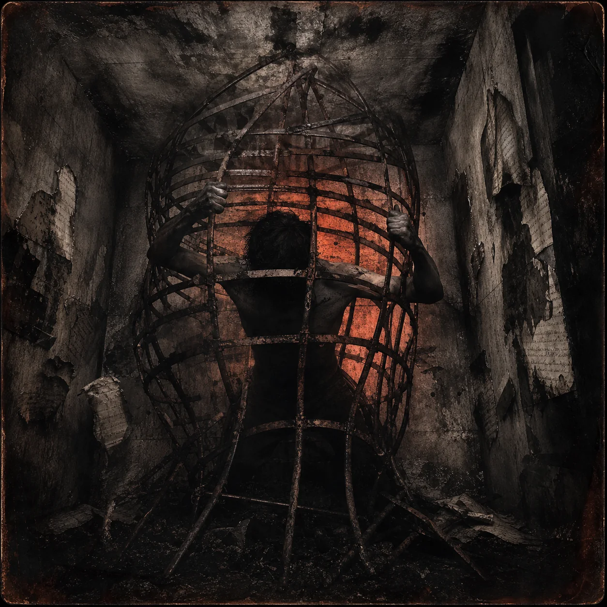
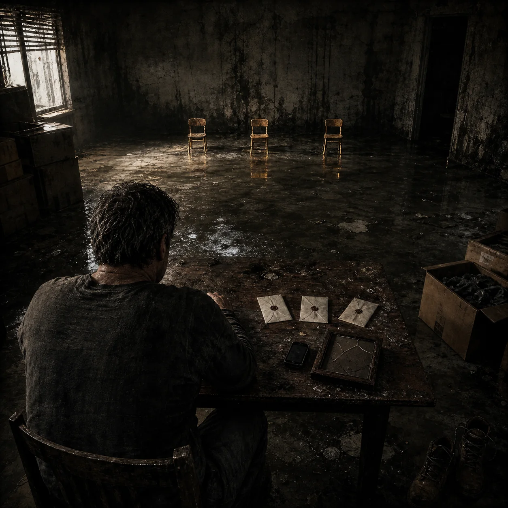
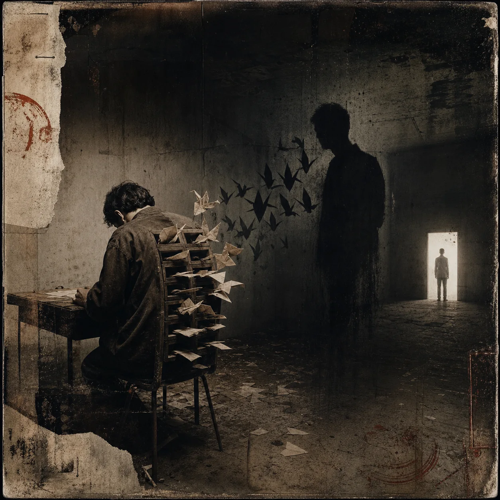
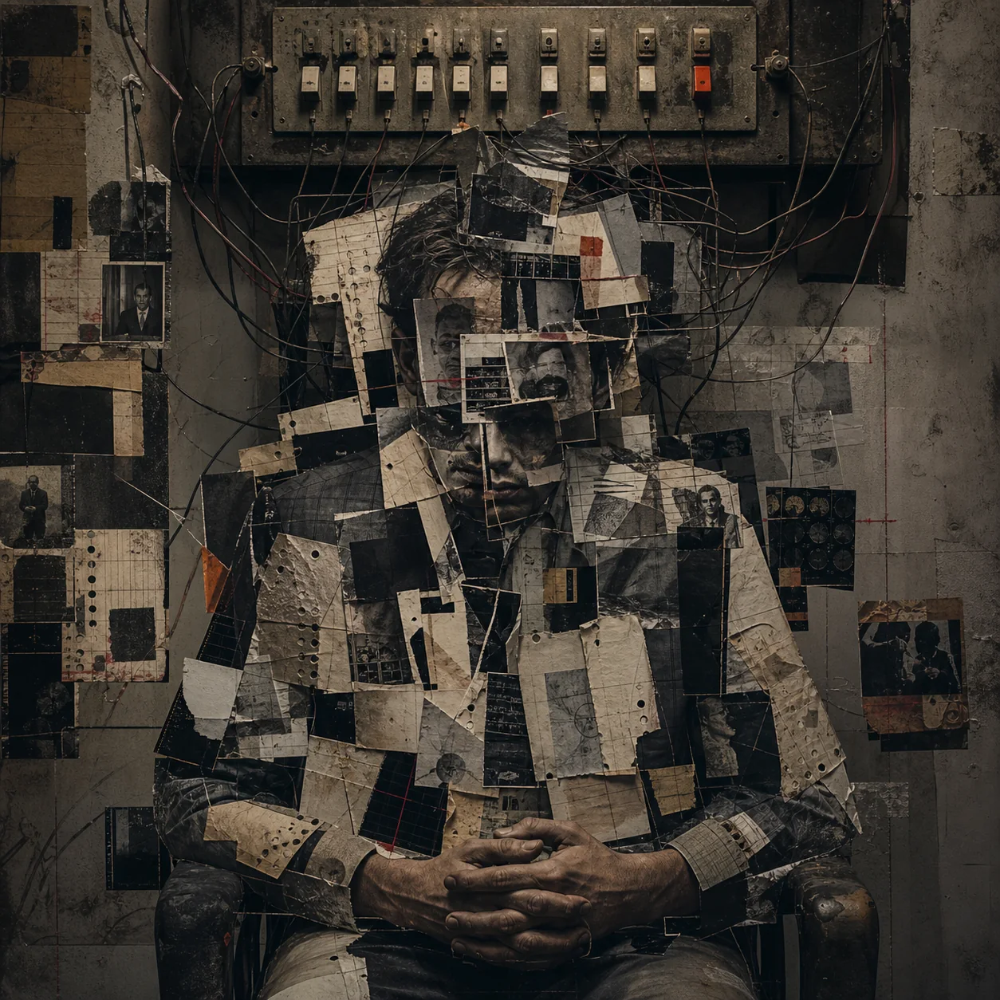
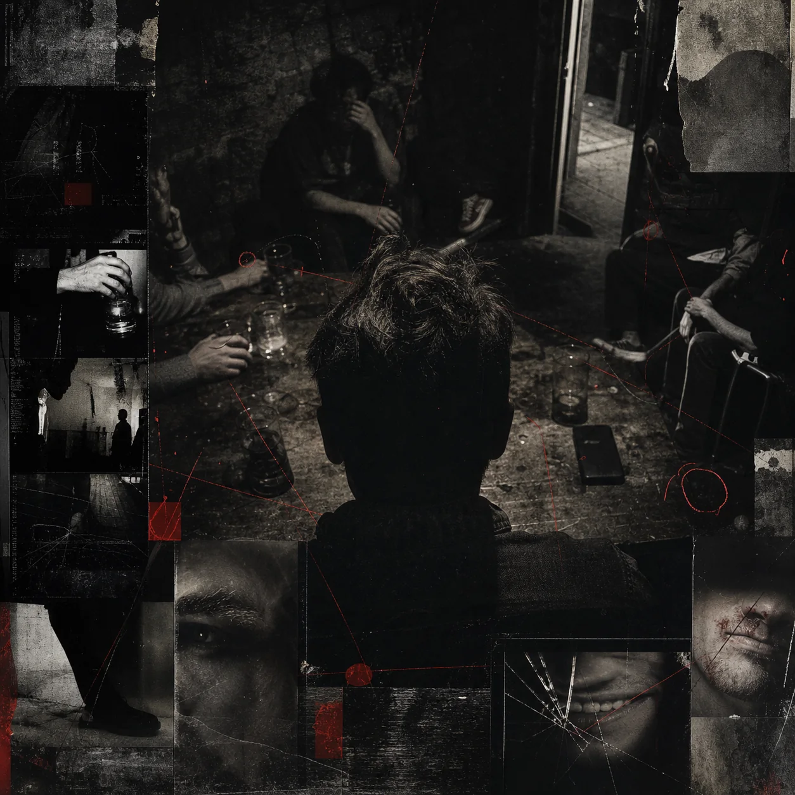

FEATURED · GRIEF JOURNEY
NO LAST WORDS
For sudden loss, unfinished conversations, and the words that had nowhere left to go. This is more than a song file. It opens into a private guided space for the last conversation, guilt, remembrance, and carrying the love forward.
ENTER NO LAST WORDS →RELEASE 001 · MASTERED
THE CAGE DOOR
I wrote this from the feeling of something inside me pacing, waiting, and getting stronger every time I swallowed the anger instead of dealing with it. The cage is partly protection and partly prison. The song is about realizing I built both.

OPEN THE SONG FILE →RELEASE 002 · MASTERED
MIRROR FOR THE MOB
Everybody can see what is wrong with somebody else. That part is easy. This song turns the mirror back around. It is about hypocrisy, judgment, performance, and the things people attack in others because they do not want to recognize them in themselves.
 OPEN THE SONG FILE →
OPEN THE SONG FILE →RELEASE 003 · MASTERED
LIFE HAPPENS
Life does not wait until you are ready. It keeps moving while you are grieving, rebuilding, using, recovering, loving, failing, and trying again. This song is not pretending everything happens for a reason. It is about what we decide to do after it happens.

OPEN THE SONG FILE →RELEASE 004 · MASTERED
LETTERS TO THE UNIVERSE
Some questions have nowhere to go. You can ask people, pray, scream, write, or sit in silence and still get nothing back. This song came from sending those questions out anyway, knowing the universe might never answer.

OPEN THE SONG FILE →RELEASE 005 · WEB MASTER
OPEN TABS
My mind does not shut one thought before opening another. Everything stays running in the background. Old arguments. New ideas. Regret. Plans. Fear. Noise. This song is what it feels like when every unfinished thought starts talking at the same time.

OPEN THE SONG FILE →RELEASE 006 · MASTERED
I READ THE ROOM
When you live in survival mode, you learn to notice everything. Tone. Silence. Movement. Tension. The smallest change in somebody's face. Sometimes that awareness protects you. Sometimes it makes it impossible to feel safe, even when nothing is happening.

OPEN THE SONG FILE →